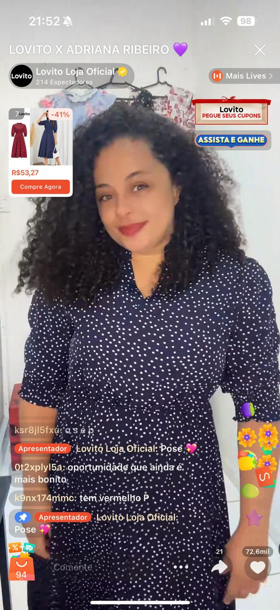
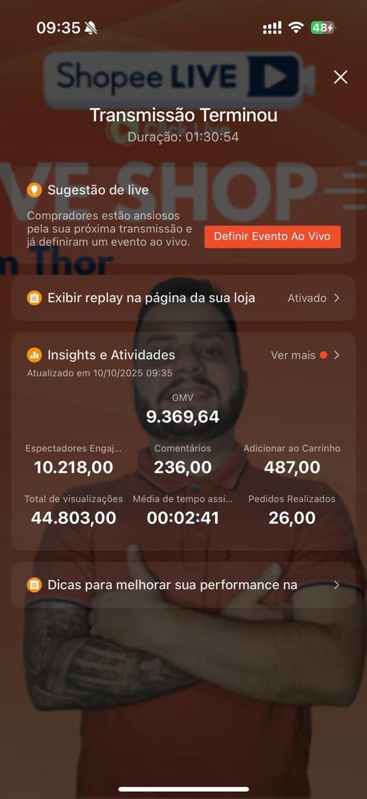
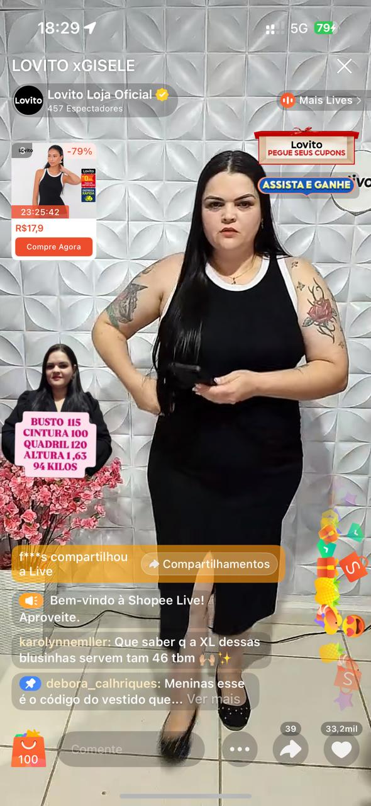
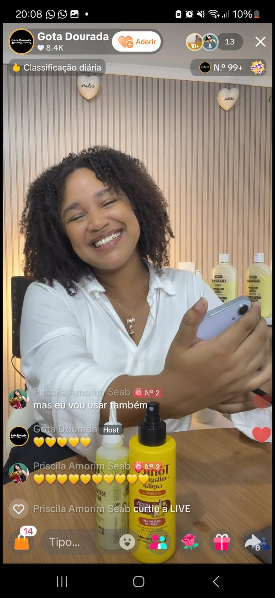

Afiliados em live vendendo em tempo real
Vendedores conectados a afiliados que apresentam produtos com foco em alcance, retenção e conversão.
A Click Live estrutura estratégias para conectar vendedores a afiliados preparados para atuar em lives com foco em performance. Unimos operação, acompanhamento, dados e métricas para ampliar alcance, acelerar conversão e transformar visibilidade em resultado comercial.
Base ativa de afiliados preparada para potencializar campanhas, visibilidade e vendas em lives.
Volume mensal que reforça a escala da operação e a força da estratégia aplicada pela Click Live.
Resultado mensal gerado com gestão, tráfego de afiliados, acompanhamento e inteligência de dados.
Afiliados ativos conectados à operação Click Live com acompanhamento e direcionamento estratégico.
Pedidos mensais impulsionados por lives, visibilidade, performance e leitura constante de métricas.
Em volume mensal movimentado com estratégia voltada para conversão e crescimento comercial.
A Click Live conecta vendedores e marcas a afiliados que atuam em lives com foco em performance. Nossa estratégia combina operação, seleção de afiliados, gestão de campanhas e leitura de dados para aumentar visibilidade e gerar mais vendas com consistência.
Ligamos vendedores a afiliados preparados para apresentar produtos, gerar tráfego e ampliar alcance com estratégia.
Trabalhamos para aumentar presença, retenção e conversão com campanhas orientadas por performance real.
Acompanhamos a operação com leitura de métricas, ajustes de rota e inteligência para melhorar resultado.
Nossa operação conecta afiliados, lives e acompanhamento estratégico para transformar audiência em resultado. Abaixo, alguns exemplos visuais do trabalho da Click Live em ação.

Vendedores conectados a afiliados que apresentam produtos com foco em alcance, retenção e conversão.

Leitura de desempenho da live para orientar decisões, ajustar estratégia e aumentar eficiência comercial.

Afiliados apresentando produtos em tempo real para gerar atenção, retenção e mais vendas na operação.

Afiliados promovendo ofertas em tempo real para ampliar presença, atenção e conversão.

Moda, beleza e outros segmentos conectados a uma estrutura pensada para gerar alcance e vendas.
A Click Live é uma agência de performance especializada em afiliados, lives e crescimento comercial. Nosso papel é conectar vendedores e marcas a uma operação capaz de gerar mais visibilidade, mais tráfego qualificado e mais conversão com apoio de dados.
Estruturamos campanhas e operações para que vendedores tenham mais presença em lives, melhor distribuição de oferta e uma rede ativa de afiliados promovendo seus produtos com acompanhamento estratégico.
Não entregamos apenas divulgação. Entregamos direção, estrutura, acompanhamento e inteligência para transformar presença em live em vendas consistentes.
Fale com a Click Live para entender como conectar seus produtos a afiliados em lives e aumentar visibilidade, conversão e resultado com apoio de dados e métricas.